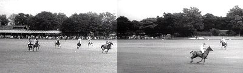
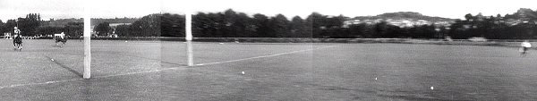
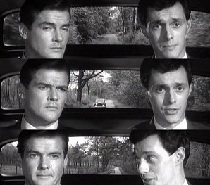
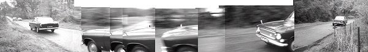
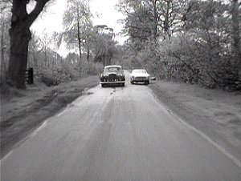
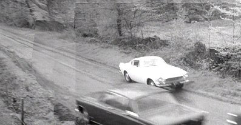
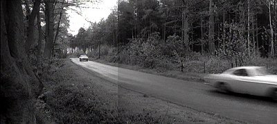
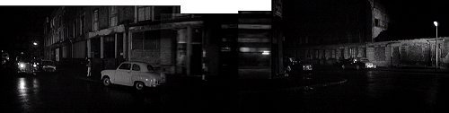
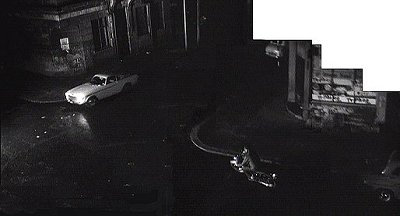
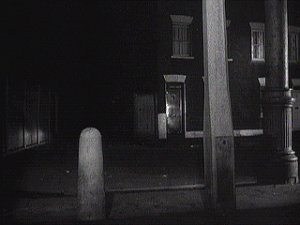

|
|
HELP FIND THE FOLLOWING LOCATIONS
PAGE 96THE SAINT: The Man Who Could not Die (Roger Moore, May 1965)
Warwick Farm Racecourse, Warwick Farm, Sydney, New South Wales, Australia - Simon Templar is at a polo match where he is to meet Nigel Perry (footage from newsreel played under episode title, transposed left to right)

Roehampton Polo Club (now The Roehapmton Club), Roehampton Lane, Roehamton, London SW15 - Simon Templar is at a polo match where he is to meet Nigel Perry. They watch as Miles Hallin scores a point (newsreel footage, transposed left to right).



Unknown 1: Miles Hallin challenges Simon to a race back to London. In the process, he nearly collides with an oncoming vehicle.





Unknown 2: Miles Hallin arrives at the spot where he is to leave payment for his blackmailer. Simon Templar and Nigel Perry have followed, and when Hallin leaves, they watch the blackmailer arrive. Simon enters the building, but after a brief fight the blackmailer escapes on his motorcycle. Nigel gives chase in Simon’s Volvo.


Unknown 3: Nigel Perry has to give up the chasing the blackmailer (Richard Wyler) on his bike driving Simon’s Volvo, when the blackmailer drives through some bollards in Chelsea.

Think you know a spot? Need a bigger image? Email me.
< Previous | Index | Avengerland | Next >
Copyright © 2021 Anthony R. McKay